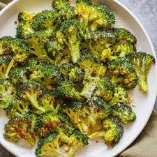

Easy Roasted Broccoli

Roasted broccoli is easy to make and so much more flavorsome than boiled. My favorite part is the roasted sliced stem pieces.
Roasted Broccoli is good if you are someone who is struggling with eating enough vegetables. One serving of this Roasted Broccoli has 63 calories, 4g of fat, 7g of carbs and 3g of protein which makes it Perfect for people trying to loseweight The following steps show you how to make 4 servings
Ingredients
- 14 ounces broccoli
- tablespoon olive oil
- salt and ground black pepper to taste
Steps
- Preheat the oven to 400 degrees F (200 degrees C).
- Cut broccoli florets from the stalk. Peel the stalk and slice into 1/4-inch slices. Mix florets and stem pieces with olive oil in a bowl and transfer to a baking sheet; season with salt and pepper.
- Roast in the preheated oven until broccoli is tender and lightly browned, about 18 to 20 minutes.
- serve and enjoy!